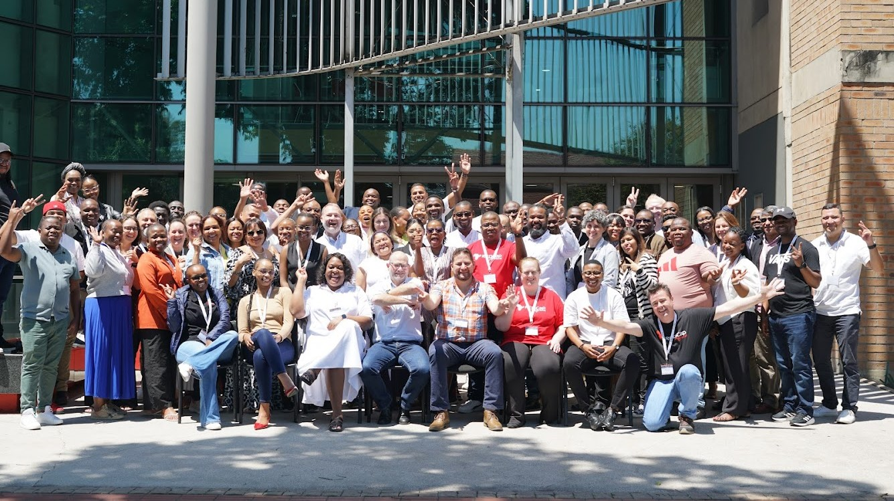

2025: Durban, South Africa
The 2025 REDCap Africa Symposium was hosted by Africa Health Research Institute (AHRI) in Durban, South Africa, bringing together researchers, data managers, developers, and public health practitioners from across the continent and beyond. The event featured keynote address from international guest speaker Rob Taylor, REDCap Lead Developer from VUMC who shared insights on new and upcoming features on REDCap. This year’s symposium welcomed 84 participants representing 8 countries and 25 institutions, a testament to the symposium’s growing regional and global impact. Key highlights included training workshops that welcomed over 60 delegates from all workshops, which encouraged hands on skill development, knowledge exchange, and new partnerships aimed at strengthening the REDCap ecosystem across Africa.
